Tutorial 02
Descriptive Statistics
LEARNING OBJECTIVES
- Be familiar with basic terms of quantitative data analysis
- Calculate and interpret proportions, percentages, and frequency distributions
- Calculate measures of variability and analyze distributions
READINGS
Readings are available on Quercus.
Wheelan, Charles. 2014. “Descriptive Statistics: Who Was the Best Baseball Player of All Time?” Pp. 15–35 in Naked Statistics: Stripping the Dread from the Data. New York: W. W. Norton & Company.
Wickham, Hadley, Mine Cetinkaya-Rundel, and Garrett Grolemund. 2023. “Data Transformation.” in R for Data Science: Import, Tidy, Transform, Visualize, and Model Data. Beijing Boston Farnham Sebastopol Tokyo: O’Reilly Media.
TERMS
|
|
Basic Statistical Terminology
I’m interested in sociology. Why do I have to learn about statistics?
Students often arrive in statistics classes wondering why they are required to take this class. Watch this video for a summary of how sociologists do sociology and how statistics fits into the bigger picture [~10 minutes].

Before we can analyze data, we need to identify the unit of analysis: who or what is being studied. The unit of analysis can be people, institutions, groups, things, countries, states, and so on.
Rarely do scientists have the time to study an entire population of interest, so we usually take a sample.
POPULATION
All units of analysis (people, institutions, groups, etc.) in which the researcher is interested.
SAMPLE
A subset of people (or institutions, groups, etc.) selected from a population.
A note on notation:
N refers to population size
n refers to sample size
Heads Up!
The capitalization of the symbols/notations in statistics are meaningful.
Capital letters are typically used when describing a population. Lowercase letters are often used when describing a sample.
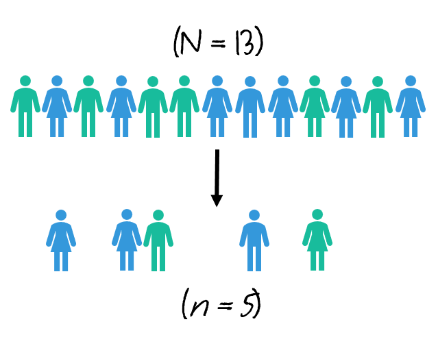
Descriptive vs. Inferential Statistics
In this course, you will learn about descriptive and inferential statistics. There are two types of statistics:
DESCRIPTIVE STATISTICS
Procedures that help us organize and describe data collected from a sample or population.
INFERENTIAL STATISTICS
Making underlying predictions or inferences about a population using observations and analyses from a sample.
Watch this short video for a more detailed explanation of the difference between the two [3 minutes].

We will focus on descriptive statistics the first few weeks of the course, before moving on to inferential statistics.
Indicate whether the following uses descriptive or inferential statistics
Tidy Data
Quantitative researchers commonly analyze data stored in tables, where data is recorded in a combination of rows and columns (think spreadsheets).
Tidy data is a specific way of organizing data into a consistent format (how the data is organized in rows and columns).
Tidy data files contain one line for each observation, such as a record or person (also called a “respondent”). Each column generally represents a single variable.
There are three rules that make a dataset tidy:
- Each variable must have its own column.
- Each observation must have its own row.
- Each value must have its own cell.

To conduct statistical analyses, we need to know the scale of measurement for a variable. There are different ways that variables can be measured.
Consider how we might measure happiness in a survey.
People could tell us they either are happy or they are not happy. They could tell us how happy they are, such as very unhappy, somewhat unhappy, somewhat happy, or very happy. We could ask people to rate their happiness on a scale from 1-10, with 1 being not at all happy and 10 being ecstatic! Or, we could ask people to tell us what emotion they most felt throughout the day (e.g., happy, sad, content, joyful, anxious, and so on).
These options are all different levels of measurement.
Measurement Levels
Watch this short video explaining the different types of data that scientists collect [~6 minutes].

Terms
DICHOTOMOUS (aka binary) A variable with only two categories.
NOMINAL
A variable made up of categories that cannot be ordered according to rank.
ORDINAL A variable made up of ranked categories, but there is no systematic and measurable numeric difference between the categories.
INTERVAL-RATIO A variable with categories that are rank-ordered and expressed in the same units.
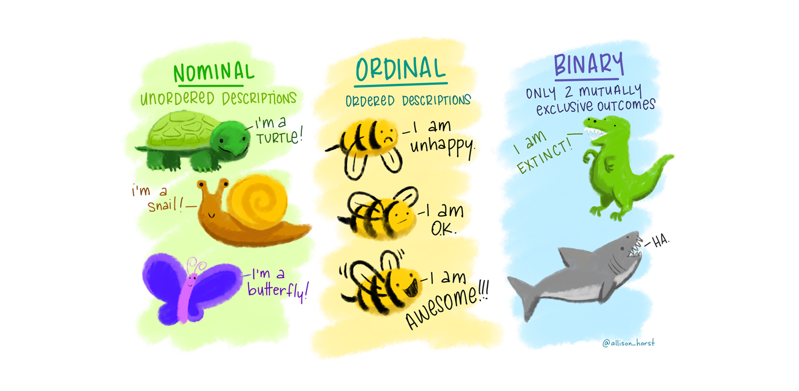
Transforming Variables
One kind of variable can be transformed into another kind of variable. Properties that can be measured at a more precise level can also be measured at a less precise level, but not vice versa.
Example:
Years of education, an interval variable, can be dichotomized into “high school graduate” vs. “not a graduate.”
Identify the following as nominal level, ordinal level, or interval-ratio level data.
Choosing a Measure
One reason it is important to understand variable types is that they help us choose the most appropriate measure of central tendency. Different levels of measurement allow us to calculate different statistics.
An appropriate measure of central tendency depends on three factors:
- the way the variables are measured (i.e., the level of measurement)
- the shape of the distribution
- the purpose of the research
The MODE is appropriate for nominal and ordinal variables.
It can be identified for interval-ratio level variables, but is often not useful.
The MEDIAN is appropriate for interval-ratio and ordinal variables.
It cannot be used for nominal level variables.
The MEAN can ONLY be determined for interval-ratio variables.
Frequency Distributions
FREQUENCY DISTRIBUTION
A table reporting the number of observations falling into each category of the variable.
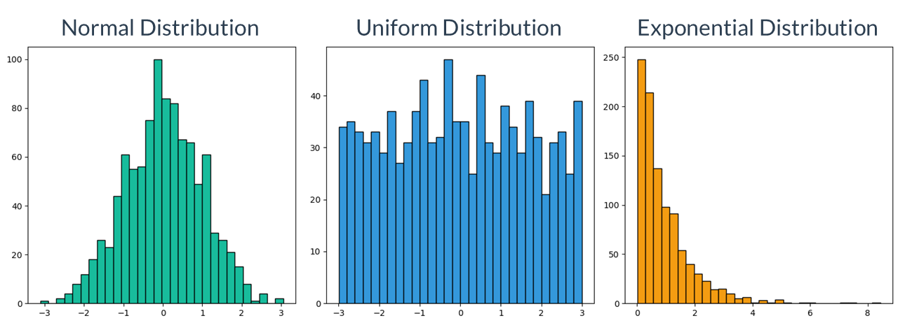
First, let’s revisit the mean, median, and mode. Understanding how these measures compare to one another provides important clues about the shape of a distribution. Check out this video [11 minutes].

When the mean, median, and mode are all equal to one another, we say that the distribution is symmetrical.
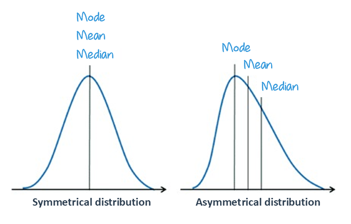
The mean is a good measure of central tendency for a symmetrical distribution.
But, the mean can be skewed by very high or very low numbers. The mean is a less suitable measure of central tendency in distributions with extreme values on one side.
Positively Skewed Distribution
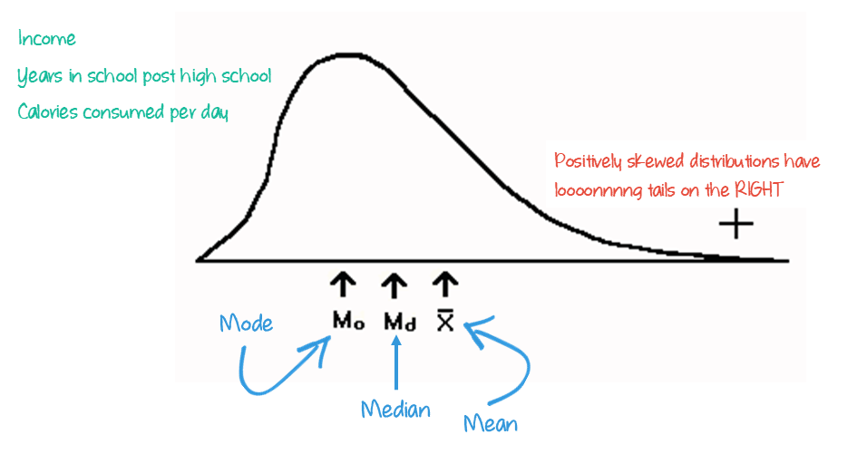
Heads up!
When a distribution is positively skewed, the mean is greater than the median.
Negatively Skewed Distribution
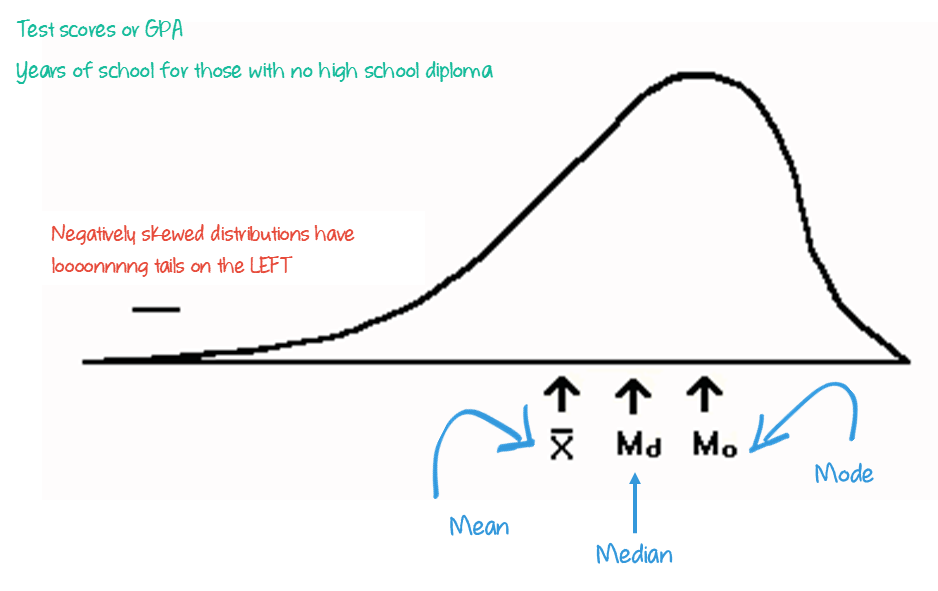
Heads up!
When a distribution is negatively skewed, the mean is less than the median.
What is the best measure of central tendency for each of the following?
HINT: Identify the type of variable first. Then decide which measure is appropriate.
Distribution Tables
A common first step in data analysis is to create a table showing the number of observations for each value of a variable. This is called a frequency table. It consists of two columns.
The first column includes the variable and the response categories.
The second column reports the number of cases in each category, as well as the total number of cases (i.e., sum of all frequencies).
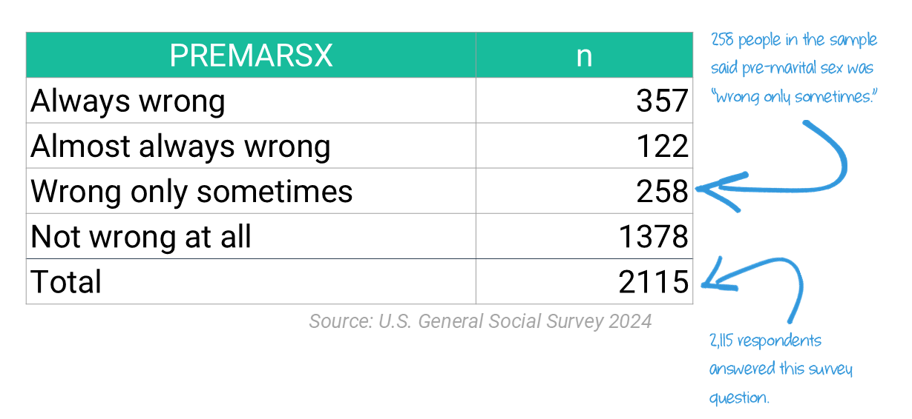
Survey question: There’s been a lot of discussion about the way morals and attitudes about sex are changing in this country. If a man and woman have sex relations before marriage, do you think it is ____________.
Frequency tables are important for understanding data, but sometimes they can be misleading if the frequencies aren’t considered in context.
Let’s look at an example.
Think Like a Statistician:
Are women more likely than men to say premarital sex is “not wrong at all”?
We start by looking at the frequency table that shows men and women’s number of responses for each category.
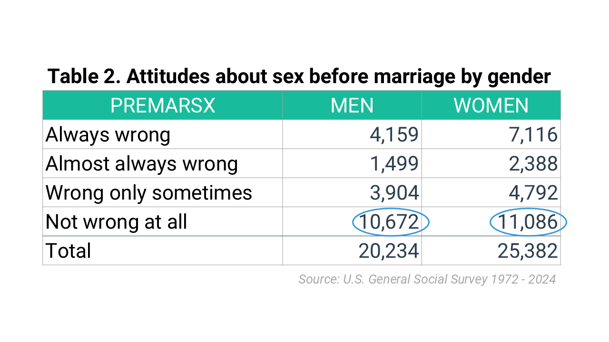
The table shows that 10,672 men and 11,086 women in the survey stated sex before marriage was ‘not wrong at all.’
If 414 more women than men thought premarital sex was “not wrong at all”, why can’t we conclude that women are more likely than men to think sex before marriage is ‘not wrong at all?’
Relative Frequency Distributions
Examine the table again to see the total number of men and women in the sample. More women than men answered the survey, which we didn’t consider when comparing the frequencies alone.
RELATIVE FREQUENCY DISTRIBUTION
A table showing the proportion or percentage for each value of a variable.
To account for the greater number of women than men in our sample, we use a ‘relative frequency distribution,’ showing either proportions or percentages to make our comparison.
Proportions are between 0 and 1.0.
\(Proportion = \frac{f}{n}\)
Percentages are between 0 and 100.
\(Percentage = proportion × 100.\)
In our table, we need two numbers to make the calculations.
- The count of men who said sex before marriage was ‘not wrong at all’ (f = 10,672)
- The total number of men who answered the survey question (n = 20,234)
\(\frac{10,672}{20,234} = .53\)
This is the proportion of men who said sex before marriage was ‘not wrong at all.’
It’s often easier to talk about these numbers in percentages. So, we just multiply the proportion (.53) by 100.
53% of men said sex before marriage was ‘not wrong at all.’
Let’s use R as a calculator to do the same thing for women.
Click the Run Code button below.
(11086/25382)*100(11086/25382)*100HINT: Just push the Run Code button to see the output.
In other words, 44% of women said sex before marriage was ‘not wrong at all.’
When do the same calculation for each category for both men and women, we can display these numbers in a frequency table.
Table 03. Attitudes about sex before marriage by gender
Men | Women | |||
|---|---|---|---|---|
premarsx | n | % | n | % |
always wrong | 4,159 | 21 | 7,116 | 28 |
almost always wrong | 1,499 | 7 | 2,388 | 9 |
wrong only sometimes | 3,904 | 19 | 4,792 | 19 |
not wrong at all | 10,672 | 53 | 11,086 | 44 |
Total | 20,234 | 100 | 25,382 | 100 |
Source: U.S. General Social Survey, 1972-2024
Heads Up!
Percentage columns ALWAYS sum to 100%.
\({21 + 7 + 19 + 53 = 100\%}\)
Let’s review our findings: 53% of men but only 44% of women reported sex before marriage was ‘not wrong at all.’
Your Data Take!
A greater proportion of men (53%) than women (44%) say premarital sex is “not wrong at all.”
To summarize, in order to compare meaningfully across groups, a frequency should be converted into a proportion or a percentage.
Working Backwards
You can also work backwards to calculate a frequency for a particular category if all you know is the percentage for the category and the total frequency.
For example, if you know that 9% of women from a sample of 25,382 believe sex before marriage is ‘almost always wrong,’ you can calculate the number of women in this category.
\(proportion * total freq = freq\)
Let’s use R as a calculator to prove it to ourselves:
Replace the blank line with x to calculate the frequency from the proportion. Then, click the Run Code button below to confirm your results.
# Get the %
x <- 2388/25382
x # show x
# Get the freq
__ * 25382# Get the %
x <- 2388/25382
x # show x
# Get the freq
x * 25382HINT: Did you replace __ with the letter ‘x’ (no quotes)?
Cumulative Distributions
There’s one more distribution to know about.
Cumulative Distribution
A table showing the number or percentage of observations at or below a given category.
Sometimes researchers want to know the percentage of people in two or more categories. These descriptions are displayed as cumulative distributions.
Maybe we wanted to know the percentage of people who think premarital sex is always OR almost always wrong. We need to sum the percentages from each of the categories to get our answer.
In 2024, 23% of people reported premarital sex is ‘always’ or ‘almost always’ wrong.
Table 04. Attitudes about sex before marriage by gender
premarsx | n | % | cumulative % |
|---|---|---|---|
always wrong | 438 | 17 | 17 |
almost always wrong | 172 | 7 | 24 |
wrong only sometimes | 317 | 12 | 36 |
not wrong at all | 1,633 | 64 | 100 |
Total | 2,560 | 100 | 177 |
Source: U.S. General Social Survey, 2024
\({\color{mathGreen} 17} + {\color{mathOrange} 7} = {\color{mathRed} 24\%}\)
Rates
Sometimes it makes sense to report frequencies as rates, rather than as proportions or percentages. Common rates sociologists might be interested in include the marriage rate, birth rate, or crime rate.
RATES
\(\frac{Actual\;occurrences}{possible\;occurrences}\)
Rates are often expressed per 1,000 or 100,000. (Calculate basic rate and multiply it by 1,000 or 100,000.)
Examples:
- Canada’s divorce rate decreased from 12.7 per 1,000 in 1991 to 5.6 per 1,000 in 2020.
- The 2021 suicide rate of 14.8 per 100,000 population for middle aged Canadians (30-59 years old) was the highest of any age group.
- Canada’s total fertility rate reached a new low in 2023 of 1.26 children per woman.
Rates can also be calculated for sub-groups.
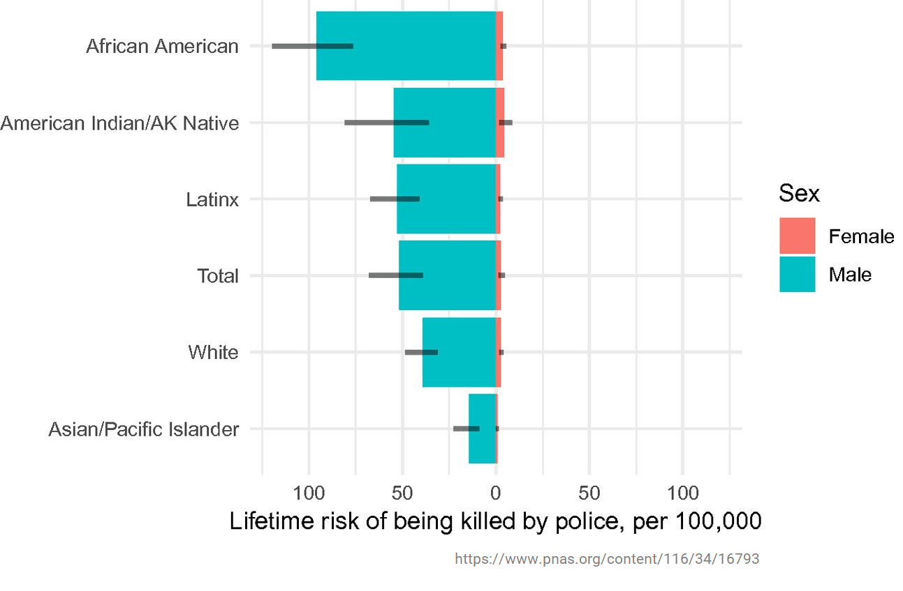
As this chart shows, nearly 100 in 100,000 Black men and boys will be killed by U.S. police over the life course. Notice the different ways rates can be conveyed:
- Latino men and boys have an estimated risk of being killed by police of about 53 per 100,000.
- Asian/Pacific Islander men and boys face a lifetime risk of between 9 and 23 per 100,000.
- White men and boys face a lifetime risk of about 39 per 100,000.
Heads up!
The denominator must include all possible occurrences.
Can the divorce rate be calculated as follows?
\(\frac{\text{Number couples divorcing in 2024}}{\text{Number couples marrying in 2024}}\)
No! The denominator should consist of all couples who could divorce—including every couple that is married at any point in 2024, even if they got married before 2024.
Summary:
Interval-ratio:
can have frequency distributions, cumulative frequency distributions, and rates
Nominal variables:
can have frequency distributions, cannot have cumulative frequency distributions
Ordinal:
can have frequency distributions and cumulative frequency distributions
Figures
Sociologists want to understand data because it helps us understand the social world. Raw data, like the distributions we have reviewed, are often presented as statistical graphs. Graphing data helps people get the overall summary of a large amount of information quickly.
Tables are especially good at conveying the details about the relationship between variables. But, graphs help direct attention to the take-away of the relationship, helping people focus on the bigger picture rather than the details.
Let’s consider some examples. Each of the graphs below could be presented as a table. But, the audience would have to work very hard to get the take-away point of the data from a table.
A bar graph is used:
for nominal or ordinal variables,
to show frequencies or percentages,
using separated rectangles, with height proportional
to the frequency or percentage.

A histogram is used:
for interval-ratio variables,
to show frequencies or percentages,
using separated rectangles, with height proportional
to the frequency or percentage.
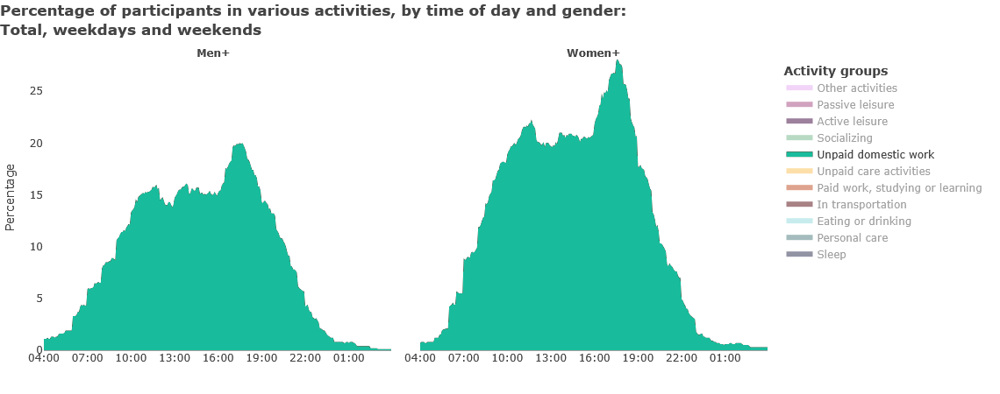
A line graph is used:
for interval-ratio variables,
to show frequencies or percentages,
joining by category the frequency or average with a line.

A statistical map is used:
for interval-ratio variables,
to show geographical variations, often in ratios,
using variation in color or hue.
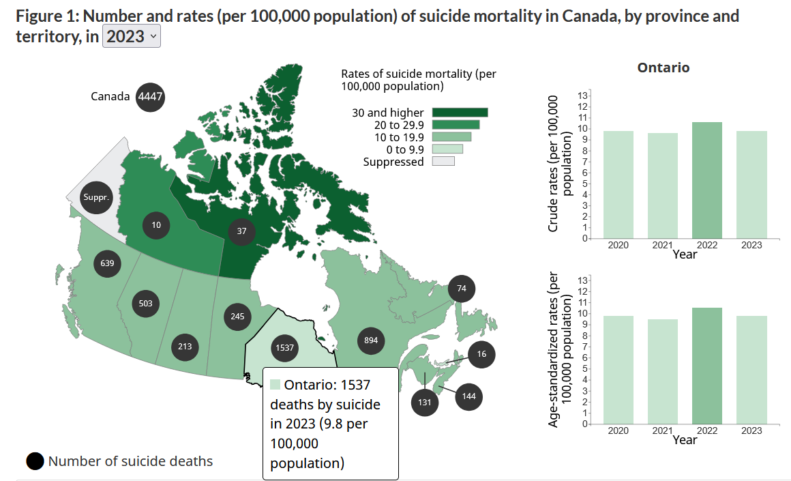
Measures of Variability
In this tutorial, you will learn how to calculate measures of variability, values that describe the diversity in a distribution, for interval-ratio (aka continuous) variables. Measures of variability reveal how spread out the values in your dataset are.
Watch this short video explaining why we need measures of variability in addition to our measures of central tendency (mean, median, and mode) [~11 minutes]. WARNING: MATH AHEAD!

Range
RANGE
The difference between the highest and lowest values in a distribution.
Here’s a short video showing you how to calculate the range [~3 minutes]. 
Finding the range in a list:
Women’s ideal age of marriage:
\(26, 23, 28, 27, 24, 25, 32, 25, 28, 25, 25, 26, 27, 26, 27, 25\)
- Put the list in order: \({\color{mathBlue} 23}, 24, 25, 25, 25, 25, 25, 26, 26, 26, 27, 27, 27, 28, 28, {\color{mathRed} 32}\)
- Subtract the min from the max: \({\color{mathRed} 32} - {\color{mathBlue} 23} = 9\)
What about using R to do the calculations for us? We can use the IQR() function and try it out on our fake family income data.
- Replace the blank line with
range. - Click the
Run Codebutton. - When you’re satisfied with your code, click
Submit Answer.
# store the values in an object called my_data
my_data <- c(26, 23, 28, 27, 24, 25, 32, 25, 28, 25, 25, 26, 27, 26, 27, 25)
# Use the range function on my_data
_____(my_data)# store the values in an object called my_data
my_data <- c(26, 23, 28, 27, 24, 25, 32, 25, 28, 25, 25, 26, 27, 26, 27, 25)
# Use the descr function on my_data
range(my_data)Hint: Delete the blank line and type “range” (without the quotes).
The strength of the range is that it is easy to calculate and simple to understand.
The weakness of the range is that it is based only on the lowest and the highest scores, which could be atypical and therefore it may be misleading.
For example, if we wanted to know about people’s average annual income, including Drake in the range would make it appear as if more people earn millions of dollars a year (most don’t).
Interquartile Range
INTERQUARTILE RANGE (IQR)
The width of the middle 50% of the distribution.
The interquartile range (IQR) is the difference between the lower (Q1) and upper (Q3) quartiles.
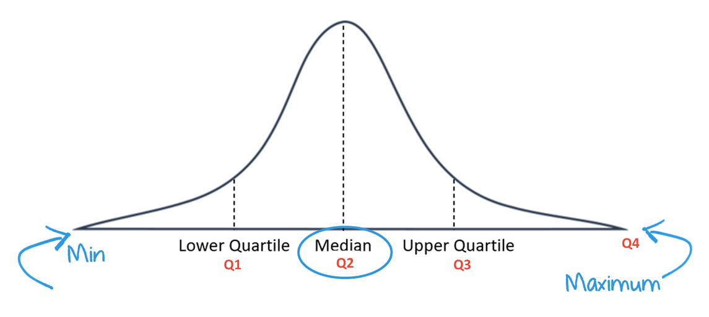
To calculate the IQR, you have to first find the values of Q1 and Q3. Check out this video for a demonstration on calculating the quartiles [~6 minutes].

Now that you know what the quartiles are, you can use this information to calculate the IQR. To do so, you simply subtract Q1 from Q3.
IQR in a list with an odd number of observations:
\(2, 3, 3, 4, 4, 6, 7, 7, 7, 8, 9, 11, 12\)
- Q1 is the median of the numbers below the median: \({\color{mathOrange} 2, 3, 3, 4, 4, 6,} {\color{mathBlue} 7},
7, 7, 8, 9, 11, 12\) (\(\frac{3 + 4}{2}\)) \(= {\color{mathOrange} 3.5}\)
- Q3 is the median of the numbers above the median: \(2, 3, 3, 4, 4, 6, {\color{mathBlue} 7},
{\color{mathRed}7, 7, 8, 9, 11, 12}\) (\(\frac{8 + 9}{2}\)) \(= {\color{mathRed} 8.5}\)
- Subtract Q1 from Q3: \({\color{mathRed} 8.5} - {\color{mathOrange} 3.5} = 5\)
IQR in a list with an even number of observations:
\(3, 4, 5, 7, 9, 10, 11, 13\)
- Q1 is the median of the numbers below the median: \({\color{mathOrange} 3, 4, 5, 7, }
9, 10, 11, 13\) (\(\frac{4 + 5}{2}\)) \(= {\color{mathOrange} 4.5}\)
- Q3 is the median of the numbers above the median: \(3, 4, 5, 7,
{\color{mathRed}9, 10, 11, 13}\) (\(\frac{10 + 11}{2}\)) \(= {\color{mathRed} 10.5}\)
- Subtract Q1 from Q3: \({\color{mathRed} 10.5} - {\color{mathOrange} 4.5} = 6\)
Heads Up!
The median of the list is \(8\).
What about using R to do the calculations for us? We can use the quantile() function to get the minx, Q1, Q2 (median), Q3, and Q4 (max). IQR() function will simply repot the IQR.
But, there’s a catch! The iqr() function is simple, but there are actually 9 different ways that R can calculate the IQR! Yikes!
To match our calculations:
- odd number of observations = type 6
- even number of observations = type 5
Try it out on our fake data and see if you can match our hand calculations.
- Replace the blank line with the correct type number.
- Click the
Run Codebutton. - When you’re satisfied with your code, click
Submit Answer.
# store the values in an object called my_data
my_data <- c(2, 3, 3, 4, 4, 6, 7, 7, 7, 8, 9, 11, 12)
# Choose the correct type and then use the IQR function on my_data
quantile(my_data, type = _)
IQR(my_data, type = _)# store the values in an object called my_data
my_data <- c(2, 3, 3, 4, 4, 6, 7, 7, 7, 8, 9, 11, 12)
# Choose the correct type and then use the IQR function on my_data
quantile(my_data, type = 6)
IQR(my_data, type = 6)Hint: Delete the blank lines and type “6” (without the quotes).
# store the values in an object called my_data
my_data <- c(3, 4, 5, 7, 9, 10, 11, 13)
# Choose the correct type and then use the IQR and quantile functions on my_data
quantile(my_data, type = _)
IQR(my_data, type = _)# store the values in an object called my_data
my_data <- c(3, 4, 5, 7, 9, 10, 11, 13)
# Choose the correct type and then use the IQR and quantile functions on my_data
quantile(my_data, type = 5)
IQR(my_data, type = 5)Hint: Delete the blank lines and type “5” (without the quotes).
Standard Deviation
A key measure of spread in statistics is the standard deviation.
STANDARD DEVIATION
A measure of variation for interval-ratio variables.
Along the way to calculating the standard deviation, you calculate the variance of a distribution. The variance is also a measure of variation of a distribution, but it is difficult to interpret because the number doesn’t reflect interpretable units.
Therefore, most of the time we continue on in our calculations to determine the standard deviation. The standard deviation is expressed in the same units as the observations. Meaning, if our variable is age, the standard deviation will be expressed in years. If our variable is income, the standard deviation will be expressed in dollars.
If all of the values in a distribution are identical, the standard deviation would be equal to zero. The mean, median, and mode would all be the same value, as there would be no variation between the values. For example, let’s say I asked a sample of 30 students how many hours they spent watching Netflix last week, and everyone reported 10 hours. The mean, median, and mode would all be 10. The standard deviation would be zero because there was no variation in the answers.
Now, let’s say I asked these same 30 students this question the following week. They all mostly reported 10 hours of Netflix viewing this week too. Except, this week, one person reported zero hours because they canceled their Netflix account and one person was home sick for the week and reported 20 hours of Netflix viewing. The mean, median, and mode would remain 10 hours per week. But, the standard deviation would be larger than zero because there was variation in the reported hours. The larger the standard deviation, the more variation there is in a distribution (i.e., values in a dataset).
5 steps for calculating the standard deviation.
Calculate the mean.
Subtract the mean from every value (deviation from the mean).
Square each “deviation from the mean.”
Calculate the mean of the squared “deviations from the mean.”
Take the square root of this new mean!
Heads Up!
The mean of the squared “deviations from the mean” is the variance!
Did I lose you there? Watch this video for a demonstration [4 minutes]. Here’s where the real math comes in!

Note the end of the video mentions there are two formula’s for calculating the standard deviation (and variance). Technically, instead of summing the “squared deviations from the mean” and dividing the sum from the total number of observations, when using a sample, statisticians divide by the total number of observations minus one.
Once the sample sizes become large enough, there’s a negligible difference between the two. In this course, we’re not going to worry about the difference. Always use the population variance and standard deviation equations, if asked to calculate by hand.
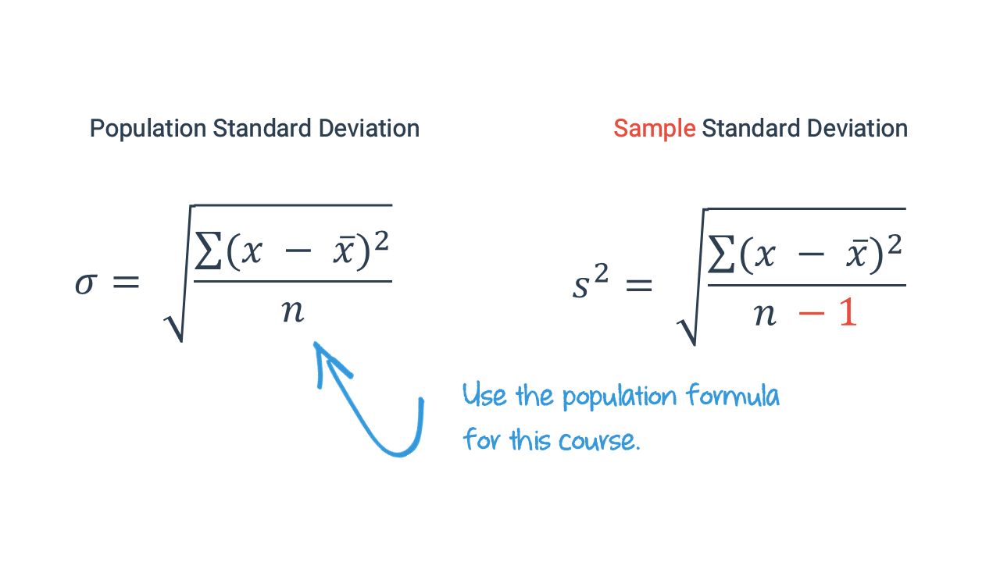
Interpretation
Okay, now that you know how to calculate the standard deviation, why would you want to?
Watch this video for the explanation for why this is a useful skill in statistics [4 minutes].

The interpretation of a standard deviation requires knowing the mean. Then, you can say something like this:
I expect the average [whatever you're studying] to differ by [your standard deviation] from the mean.For example, if the average number of minutes watching television per day was 250 and the standard deviation was 90, you could say:
I expect the average number of minutes of television watched per day to differ by 90 minutes from the mean (250 minutes).Let’s see this in action
\(2,3,4,7,9\)
Step 1 Calculate the mean \(\bar{X}\)
\(\frac{2 + 3 + 4 + 7 +9}{5} = 5\)
Step 2 Subtract the mean (\(\bar{X}\)) from every value (\(X\))
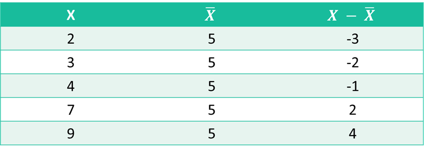
Step 3 Square each difference
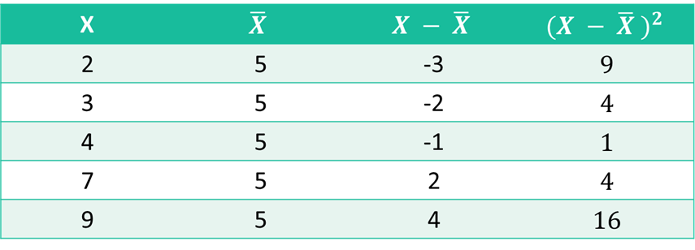
Step 4 Calculate the mean of the squares
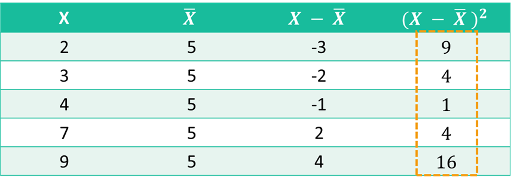
\(\frac{9 + 4 +1 + 4 +16}{5} = 6.8\)
Heads Up!
6.8 is known as the variance!
Step 5 Take the square root of the variance
\(\sqrt{6.8} = 2.6\)
I expect the average [whatever you’re studying] to differ by [your standard deviation] from the mean.
Example: Mean: 5; SD: 2.6
I expect the average [number of household family members] to differ by [2.6 people] from the mean [of 5 people per household].
Wow, this is going to get tedious with any more cases. Let’s make R do this for us instead. Use the sd() function and try it out on our fake family income data.
- Use the
sd()withmy_data. - Click the
Run Codebutton. - When you’re satisfied with your code, click
Submit Answer.
# store the values in an object called my_data
my_data <- c(48000, 52000, 45000, 50000, 53000,
49000, 46000, 51000, 65000, 250000)
# Use the sd() function on my_data below# store the values in an object called my_data
my_data <- c(48000, 52000, 45000, 50000, 53000,
49000, 46000, 51000, 65000, 250000)
# Use the sd() function on my_data below
sd(my_data)# store the values in an object called my_data
my_data <- c(48000, 52000, 45000, 50000, 53000,
49000, 46000, 51000, 65000, 250000)
# Use the sd() function on my_data below
sd(_____)Learning Check 02
Please answer the following questions to verify you understand the topics in this module.
Using the table below, answer the following questions.
Fill in the missing cells of the table (by hand or using a spreadsheet).
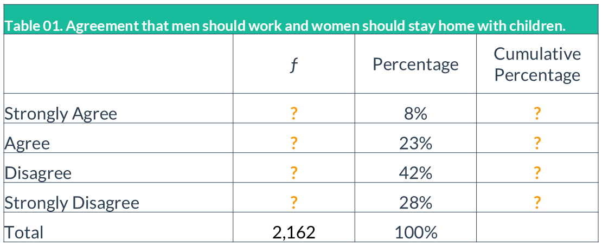
Source: U.S. General Social Survey, 2024
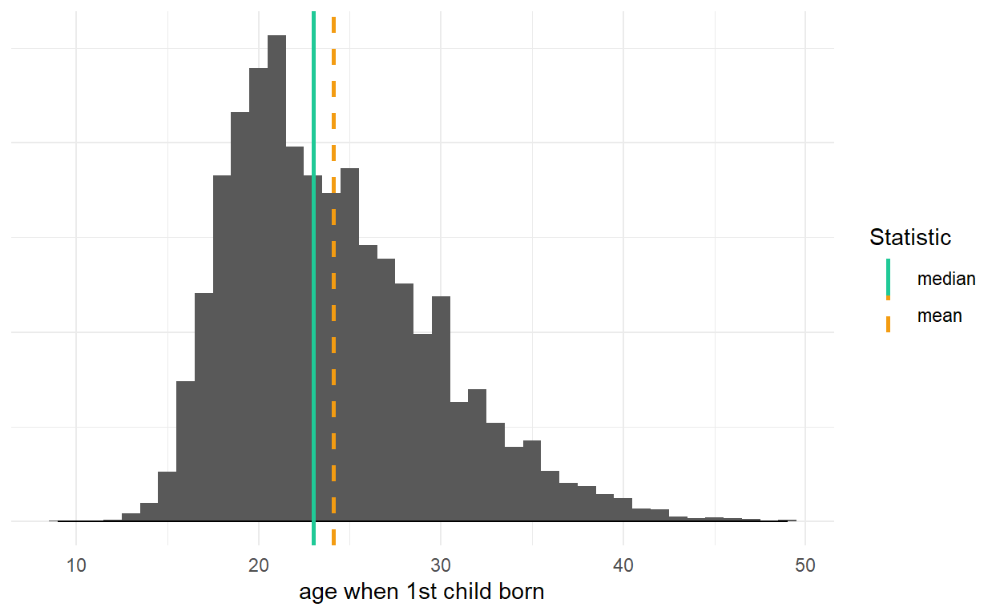
Source: U.S. General Social Survey 1994-2022
You went back to the original surveys and find out that there was a typo with the outlier. Instead of 250,000, the actual income was 25,000. Correct this in your data and calculate the mean and the mode.
# store the values in an object called my_data
my_data <- c(48000, 52000, 45000, 50000, 53000,
49000, 46000, 51000, 65000, 250000)
# Use the mean and median functions# Create a frequency table for the `premarsx` variable.You’ve been asked to explain how the divorce rate has changed since the 1990s. To analyze this trend, you’ve been provided with a sample dataset containing the 1991-1995 and 2016-2020 divorce rates for Canada’s 10 provinces.
Number of persons who divorced per 1,000 married persons
| region | div_rate_1995 | div_rate_2020 |
|---|---|---|
| Newfoundland and Labrador | 7.9 | 6.2 |
| Prince Edward Island | 8.8 | 6.6 |
| Nova Scotia | 11.3 | 7.3 |
| New Brunswick | 9.4 | 7.4 |
| Quebec | 14.3 | 8.0 |
| Ontario | 12.2 | 7.2 |
| Manitoba | 11.4 | 7.1 |
| Saskatchewan | 10.6 | 7.7 |
| Alberta | 14.1 | 9.7 |
| British Columbia | 14.2 | 7.5 |
Source(s): Canadian Vital Statistics – Divorce Database (3235).
Start your analysis by calculating the statistics needed to fill in the following table.
Then, answer the questions below. Now’s a good time to get out some scratch paper and a pencil to do some math.